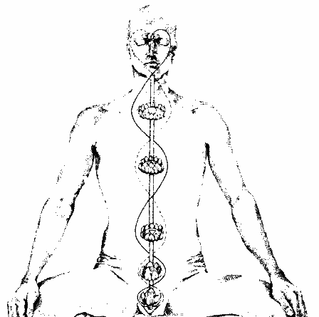

Now, there is a male and a female aspect to the soul. The reason the enemy places so much emphasis on the 'heart' chakra, is because it is basically powerless and is neuter. It is a connector, and nothing more. Anton LaVey wrote in his book 'The Satanic Rituals' regarding "The Seven Towers of Satan",
"At intervals along this strip were seven towers- the Towers of Satan (Ziarahs)-six of them trapezoidal in form, and one, the center on Mount Lalesh, shaped like a sharp, fluted point."
The above is an allegory, the 'center' being the neuter 'heart' chakra, shaped differently from the others. In deep meditation, many of us can see this different chakra, which is shaped like a yoni [vagina].
Now, who is 'Inanna'? She is 'Queen of Heaven.' The word 'heaven' really means the 6th and 7th top chakras and their extensions such as the all-important pineal gland. Getting back to my sermon last September, about fixing the energy, the well-known valentine heart with the arrow shot through it is an allegory and symbol for fixing the serpentine energy. The heart is not in the chest as the enemy tries to get us to believe, but it is in the head and is formed by the ida, the pingala and the sushumna, and here are the illustrations for it:

|  |
The allegories preserved in children's fairy tales such as 'Sleeping Beauty' often have the prince kiss the sleeping princess and awaken her. The meaning behind this is the activation and empowerment of the solar 666 [King of the Gods], connects with the 6th chakra; the pineal gland and though this, activates this gland to secrete the elixir/ambrosia which makes immortality possible and reverses physical aging. The Tibetan mantra Aum Mani Padme Haum means "The Jewel is in the Heart of the Lotus," the "Jewel" being the pineal gland. The above is the correct mantra for this. The enemy, has replaced the all-important 'AUM' with 'ohm', which has no real power. As most of us know the lotus/lily symbolizes the crown chakra and is ruled by Lilith; the base chakra ruled by Satan [chakra containing the serpent], and the unification of Satan and Lilith indicates the risen serpent; the male and female.
Now, for the meditation connecting the King [3rd solar 666 chakra] and Queen [the 6th chakra and pineal gland]; for the magnum opus to work, the King and Queen must be united. Lilith told me this meditation takes a bit of time in most cases to establish an energy connection.
Note: This meditation is not for new people.
The Satanic rosary is used with this. To do this meditation, one must vibrate 108 times for the King and another 108 times for the Queen. 108 + 108 = the very sacred number of 216.
To unite the King & Queen:
1. Vibrate 'RAUM' -- RAH—UU—MM into your solar chakra 108 times.
2. Relax and keep still and feel the energy from this well up inside of you for a few minutes.
3. Vibrate 'AUM' -- AH—UU—MM into your pineal gland 108 times. [Before doing this, try to locate your pineal gland by feel. It is to the lower right side of the 6th chakra or thereabouts. It feels like a hollow. Just do the best you can.
4. Relax and keep still and feel the energy for a few minutes.
5. Now vibrate 'Inanna' into your 6th chakra seven times. YEEE—NAH---NAH
6. Focus on the energy for 10-15 more minutes. If you activate your pineal gland, you will know it. It will blow you away with intense ecstasy.

BACK TO SATANIC POWER MEDITATION MAIN PAGE
© Copyright 2013, Joy of Satan Ministries;
Library of Congress Number: 12-16457